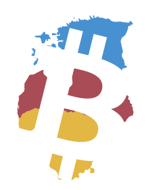

Privacy & encryption
Private communication is worth defending. Our concerns include mass surveillance, Chat Control and the erosion of end-to-end encryption.
Estonia · Latvia · Lithuania
Cypher Baltics is an initiative connecting people and projects around privacy, individual sovereignty and free technology in the Baltic countries.
We build community resources and bring people together to learn how to keep control of their money, data and everyday tools.

01 / Our approach
We come from the Bitcoin community. What interests us extends beyond money — the freedom to communicate privately, run our own tools and decide whom we trust.
Private communication is worth defending. Our concerns include mass surveillance, Chat Control and the erosion of end-to-end encryption.
Software we can inspect, change and share. Decentralised infrastructure, self-hosting, local AI and open models are part of that exploration.
Bitcoin, self-custody and payments without a central gatekeeper. We also examine CBDCs and their implications for financial privacy.
02 / PROOF conference
PROOF is a conference in Vilnius dedicated to privacy, decentralisation and individual sovereignty. It brings these questions into the same room through talks, workshops and conversations.
Cypher Baltics grows from this experience. The community sites are already available; our next aim is to develop workshops, discussions and collaborations throughout the year.
Explore the conference03 / Communities
Meet the local Bitcoin community in Lithuania or explore communities, events and places across the Baltic countries.

Meet the Bitcoin community in Lithuania. Find meetups, Bitcoin Walks and places that accept bitcoin.
An open, autonomous community.
Discover Bitcoin communities, conferences and accepting merchants across Estonia, Latvia and Lithuania.
A regional initiative of Cypher Baltics.04 / Contact
Have an idea for a workshop, a project to share or a question about the initiative? Write to us.
contact@cypherbaltics.orgCypher Baltics is maintained by Marius Off-Chain. It presents an initiative and does not claim to be a registered nonprofit.
This website uses no analytics scripts, advertising trackers or embedded third-party content. Fonts and images are served with the site. Following an external link takes you to a website with its own privacy practices.
Technical request information may be processed by the hosting provider to deliver and secure the site. Emails you send are used to respond to your message. For questions, write to contact@cypherbaltics.org.